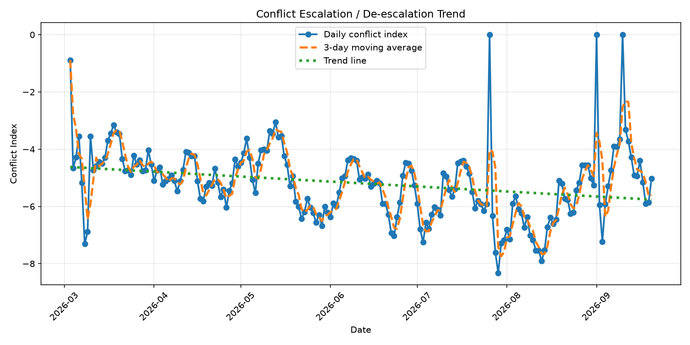

Automated monitoring of conflict escalation and de-escalation signals based on daily international news analysis.
Report date: Loading...
Assessment: Loading...
Total score: Loading...
Conflict index: Loading...
Articles analyzed: Loading...
Trajectory: Loading...
Short-term outlook: Loading...
Loading commentary...
Loading forecast...
The forecast is an automated estimate based on headline intensity, normalized conflict index and short-term trend direction. It is not a prediction of a precise end date, but a directional signal about escalation pressure.
This dashboard analyses daily news headlines related to the conflict and assigns escalation or de-escalation scores based on predefined keywords.
Negative values indicate escalation signals such as strikes, missile activity, retaliation or casualties. Positive values indicate de-escalation signals such as ceasefires, diplomacy, negotiations or mediation.
The total score reflects the cumulative daily signal, while the conflict index normalizes that score by the number of analysed articles, making day-to-day comparisons more reliable.
The trajectory is derived from the last three daily conflict index values and indicates whether the information environment is becoming more escalatory, more stable, or remains uncertain.
| Conflict Index | Interpretation | Meaning |
|---|---|---|
| <= -2.00 | Strong escalation | Heavy concentration of military and retaliatory signals in the news flow. |
| > -2.00 and <= -1.00 | Moderate escalation | Conflict activity is dominant, but not at the highest observed intensity. |
| > -1.00 and < 0.00 | Mild escalation | Tensions are present, though not overwhelming in media reporting. |
| >= 0.00 and < 1.00 | Neutral / mixed | Escalatory and de-escalatory signals appear relatively balanced. |
| >= 1.00 | De-escalation | Diplomacy, ceasefire or negotiation-related signals are becoming more visible. |
The chart shows the daily conflict index, the 3-day moving average and the broader trend line.
